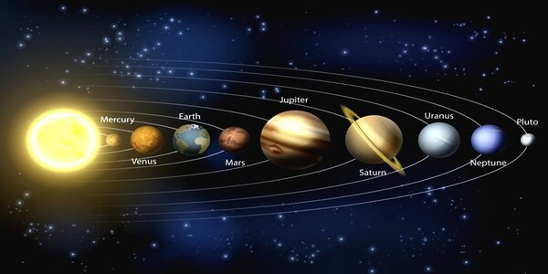

Слънчевата система е група астрономически обекти, включваща Слънцето и небесните тела, обикалящи около него – планети, планети джуджета, спътници, астероиди, комети, междупланетен прах и газ. Всички те са образувани при разпадането на молекулярен облак преди около 4,6 милиарда години.
Четирите планети, най-близки до Слънцето, са Меркурий, Венера, Земята и Марс. Те са по-малки от другите и носят названието планети от земен тип или вътрешни планети. Съставени са главно от скали и метали.
Следващите четири планети са Юпитер, Сатурн, Уран и Нептун. Наричат се газови гиганти или външни планети. Те са по-масивни и са съставени предимно от водород и хелий.
Слънчевата система включва и две области с концентрация на по-малки обекти. Астероидният пояс, разположен между орбитите на Марс и Юпитер, е сходен по състав на планетите от земен тип. Намиращите се извън орбитата на Нептун транснептунови обекти са съставени главно от замръзнали вещества – вода, амоняк и метан. В тези области има пет обекта, които са достатъчно масивни, за да бъдат заоблени от собствената си гравитация, поради което са класифицирани като планети джуджета: Церера, Плутон, Хаумея, Макемаке и Ерида. Шест планети и три планети джуджета имат естествени спътници, а външните планети имат и пръстени от прах и други частици.